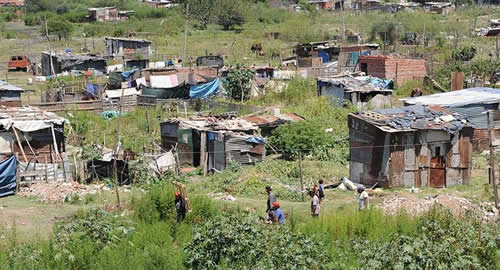

Real Chubut - Agencia de Noticias


Para la OCDE, 9 millones de argentinos corren riesgo de caer en la pobreza

Casi como un reclamo, o más bien a modo de anhelo, se llevó a cabo en Casa de Gobierno el foro internacional al que llamaron "Argentina en OCDE", donde ministros y directivos de ese organismo disertaron bajo la premisa "Una agenda social para el desarrollo sostenible y el crecimiento inclusivo".
Paradójicamente, afuera de la Casa Rosada cientos de integrantes de organizaciones sociales realizaron ollas populares reclamando políticas integrales para los trabajadores de la economía social, lo que derivó en el vallado de la zona, y la concreción de una reunión de los titulares de las carteras de Trabajo, Jorge Triaca, y Desarrollo, Carolina Stanley, antes de que ambos ministros disertaran en el Salón de los Pueblos Originarios.
En ese marco, la propia OCDE advirtió que en el país hay "nueve millones de personas con riesgo de caer en la pobreza".
Quien lo dijo fue Ángel Melguizo, Jefe de la Unidad de Latinoamérica y el Caribe de la organización. Ante la mirada incómoda del titular de Producción, Francisco Cabrera, con quien compartió panel sobre "Reducción de la pobreza e igualdad de oportunidades", Melguizo señaló además que cuatro de cada diez jóvenes "no estudian ni trabajan, o si lo hacen, es en el mercado informal".
"En la OCDE no somos partidarios de exponer en paneles integrados en su totalidad por hombres, pero hacemos una excepción porque respetamos mucho a Argentina", sostuvo polémico Melguizo ante un panel compuesto de masculinos, y afirmó que en el país, cuatro de cada diez mujeres no participa del mercado de trabajo.
Periodista: El foro se llama "Argentina en OCDE" pero sin embargo nuestro país no es miembro de esa organización, ¿por qué?
Ángel Melguizo: Argentina empezó el trabajo con la OCDE hace más de treinta años, y ya tiene una participación en mucho de los comités. El proceso de entrada y de acceso al organismo es una solicitud formal del país, que ya está hecha, y ahora se trata de que el Consejo de la OCDE decida qué países van a entrar. Es una decisión que depende un poco también del tamaño óptimo que tiene la organización y del interés que tienen de entrar nuevos países. Pero desde luego Argentina es de los países que son más interesantes y que podrían beneficiarse y aportar también mucho a la organización.
P.: ¿Qué puntos a favor tiene Argentina para integrar la OCDE?
Á. M.: Argentina es hoy en día un país relevante en el contexto internacional, como lo demuestra el hecho de que va a asumir la presidencia del G20. Vemos además un país que está haciendo bastantes innovaciones. Innovaciones en el impulso a la productividad, en lo que hace a la reducción de la pobreza y la desigualdad, y en la gobernanza. Pues todos esos ambientes son tres pilares en lo que hace al desarrollo económico y por eso vemos que la entrada de Argentina sería sumamente útil.
P.: ¿Qué falta mejorar para que el país tenga sus membresía? En su exposición mencionó que nueve millones de argentinos podrían caer en la pobreza, sumándose a las cifras que ya contabiliza el INDEC.
Á. M.: Argentina inició una agenda de transformación económica y social realmente muy notable, sobre todo por la estabilización macroeconómica que es un ingrediente totalmente esencial, también comporta algunas medidas de más competencia y apertura al comercio y a la inversión, y por último está la discusión social. En este último punto hay bastantes retos todavía. Primero de erradicación de la pobreza, pero además hay que tener en cuenta los incentivos para aquellos argentinos que están por encima de la línea de la pobreza pero que están en riesgo de caer si no encuentran un empleo formal, si enferman o no se cuidan. Por lo tanto, ahí está la necesidad de invertir en educación, en competencias, e incentivos al empleo formal. La cifra está incluida en el último informe económico multidimensional que presentamos. Un 30% de los ciudadanos argentinos está en la pobreza y hay un 20% en riesgo de caer en la pobreza.
P.: En este contexto, ¿cómo se ven afectados los jóvenes con relación al empleo?
Á. M.: Estamos hablando de una Argentina que es relativamente joven, por lo tanto hay que aprovechar toda la energía y todo el talento que tiene la juventud. Lo que estamos viendo es que cuatro de cada diez jóvenes (menores de 29 años) o no estudian ni trabajan, o trabajan en el sector informal. Esta proporción asciende a seis de cada diez en las clases vulnerables. Por eso necesitamos de políticas que promuevan herramientas, habilidades o competencias, eso es lo esencial.
P.: ¿Y las mujeres?
Á. M.: Hay una agenda inconclusa en materia de género en Argentina. Es de los países de América Latina en donde la participación laboral femenina es menor, y aquí creemos que hay que ser valientes, hay que arriesgar. Porque lo que vemos en algunos países miembros de la OCDE es que políticas valientes mejoran las perspectivas.
P.: ¿El endeudamiento externo puede llegar a ser un problema para la Argentina en su intención de ingresar a la OCDE?
Á. M.: El endeudamiento externo forma parte de los pilares de sustentabilidad macroeconómica, entonces lo que se intenta es que se haga en el marco de la reducción del déficit. Es importante remarcar que vemos que Argentina está robusteciendo mucho a sus instituciones, en concreto a sus instituciones fiscales. Entonces el endeudamiento está bien en tanto y en cuando sea compatible con el marco de consolidación fiscal que está previsto, y por ahora vemos que va en buen camino.
P.: ¿Considera el organismo que usted representa que las reformas laboral y tributaria impulsadas por este Gobierno favorecen al desarrollo y crecimiento inclusivo?
Á. M.: Nosotros no comentamos reformas que están en curso y que debe tratar el Congreso. Pero dos elementos que se han mencionado en el panel sobre la reforma laboral y tributaria han sido destacados aquí como buenos: la extensión de las licencias de paternidad, que es un elemento esencial para que las cargas se repartan de manera equitativa. En el ámbito tributario, el alivio en las cargas sociales que va a beneficiar más a los sectores medios y va a ser un incentivo a participar de la formalización de empleo.
Fuente: Ambito